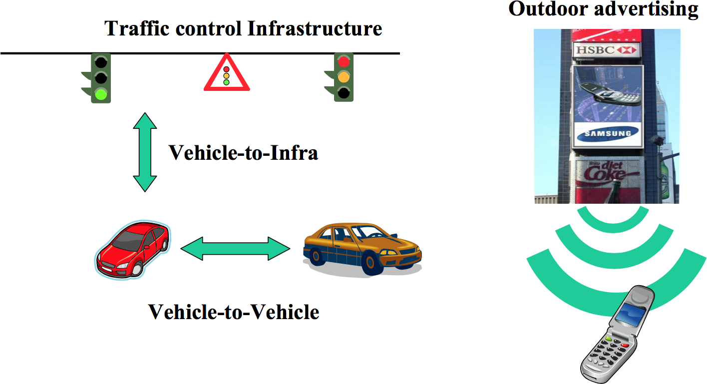
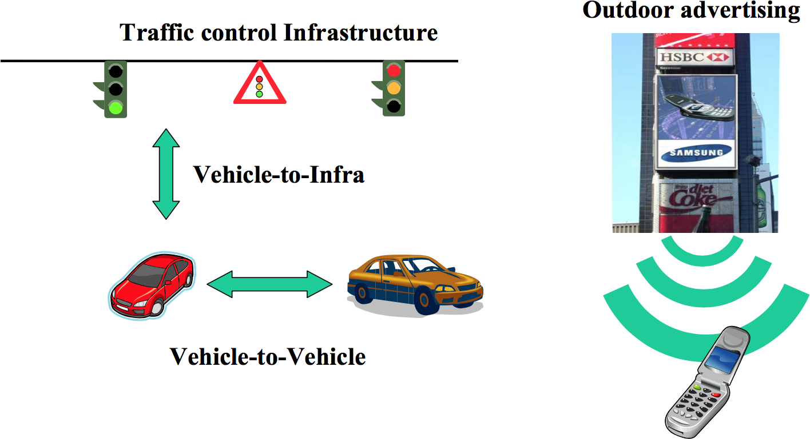
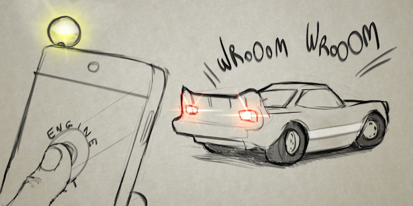
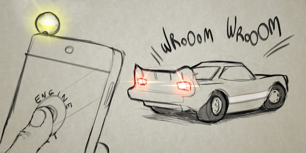
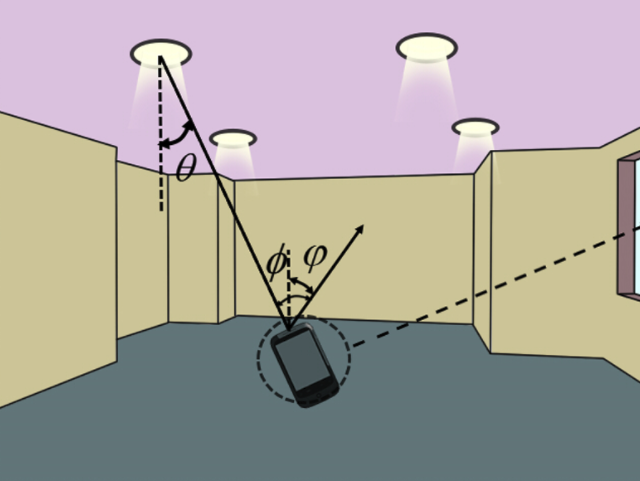
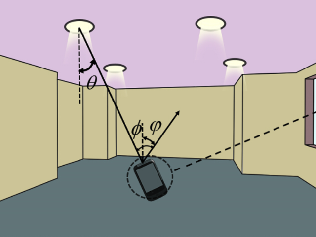
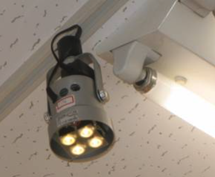
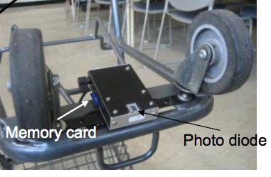
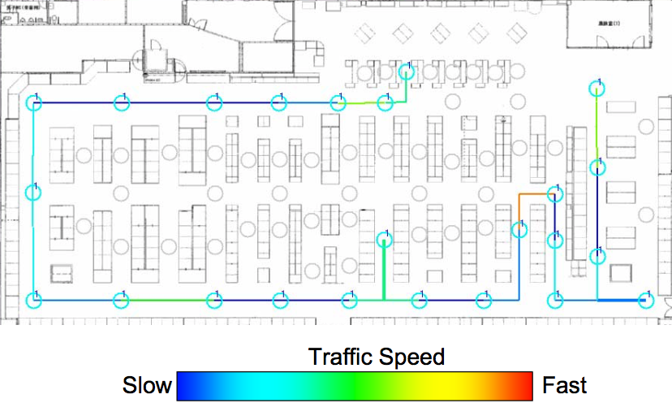
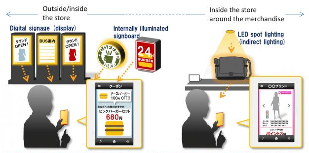

VLC pour l’Internet des objets
- Bas débit : ~100bit/s à ~10kbit/s
- Décongestionner les réseaux et désaturer le spectre des radio fréquences
- Optimiser la consommation énergétique, l’autonomie
- Réduire les coûts de production
Les smart cities
 

VLC dans le transport
En 2013, la SNCF a commencé à travailler avec oledcom pour utiliser les technologies de la communication par lumière visible dans les TGV et les gares (voir présentation du projet ici).
Une idée est par exemple de transmettre des informations (perturbations de lignes, horaires d’arrivée, …) aux voyageurs des TGV par l’intermédiaire des liseuses à LED présent au dessus de chaque voyageur.

Le Li-Fi
Le Li-fi est souvent confondu directement avec VLC, mais ce n’est qu’une sous partie du VLC. En particulier, le Li-fi et la partie haut débit du VLC.

Cette technologie vise à remplacer le wifi.
Le Li-Fi peut-il révolutionner les réseaux sans-fil à la maison ?
Pour fonctionner en Li-Fi une LED aura tout de même besoin d’une puce adaptée et d’être reliée à un réseau. Les lumières étant connectées au réseau électrique, la solution du CPL est très souvent utilisée. Un smartphone ou un ordinateur devra contenir un récepteur pour recevoir et décoder le signal lumineux. Celui-ci peut prendre la forme d’une clé USB équipée d’une photodiode, d’un écran photovoltaïque, ou encore utiliser la caméra du téléphone.
En 2014, l’équipe de recherche du projet “Ultra-parallel visible light communications (UP-VLC)” a obtenue des débits de plus de 10Gbps en utilisant de l’optoélectronique à base de GaN (Nitrure de Galium).
En 2015, un article a été publié présentant un système de communication optique avec un débit de plus de 100Gbps.
Le jeu et le divertissement
site du projet de DisneyResearch
 

Localisation Indoor
 

  
Online to Offline Marketing

Affichages d’informations contextuelles